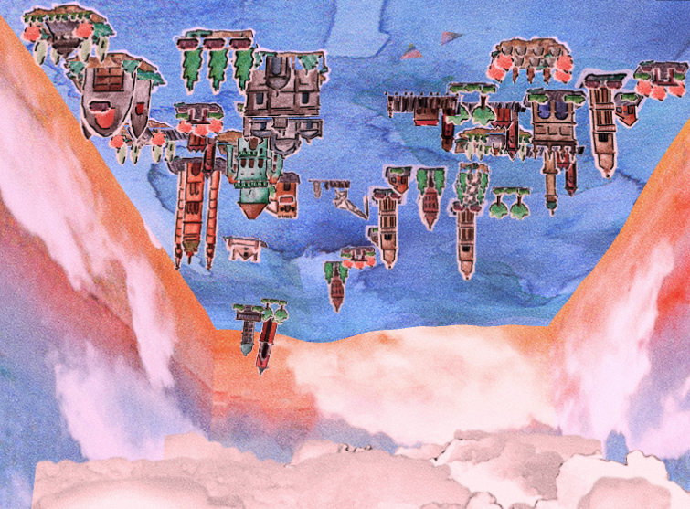

construcciones efímeras (ephemeral constructions) - 2014
diseño visual, ilustraciones y diseño de interacción para el proyecto “construcciones efímeras”, del grupo de arte interactivo biopus
este proyecto fue encargado por el instituto cultural de la provincia de buenos aires, para ser exhibido en el museo de arte contemporáneo de mar del plata (mar). consiste de un mapping interactivo, que cubre una cara del edificio del museo. la proyección presenta de una citadela invertida, que flota sobre la superficie de un océano. los usuarios pueden construir edificios utilizando sus manos, al mismo tiempo que controlar tormentas eléctricas que destruyen las edificaciones.
estuve encargado de crear todos los gráficos de este proyecto, que fueron pintados a mano en acuarelas, al mismo tiempo que participé en el proceso de diseño de interacción.
video en la página de vimeo de biopus
creado con processing y openFrameworks.
- - - - - - - - - - - - - - - - - - - - - - - - - - - - - - - - - - - - - - - - - - - - - - - - - - -
visual design, illustrations and interaction design for interactive art group biopus’ project “construcciones efímeras”
this project was comissioned by the ministry of culture of the buenos aires province, to be exhibited in the museum of contemporary art of mar del plata (mar). it consists of an interactive projection mapping which covers one side of the museum building. this projection presents an upside down citadel floating on the surface of an ocean. users can construct buildings using their hands, as well as control thunderstorms that destroy the buildings.
I was tasked with creating all the graphics for the piece, which were hand painted in watercolor, and I also took part in the interaction design process.
video on biopus’ vimeo page
made with processing and openFrameworks.